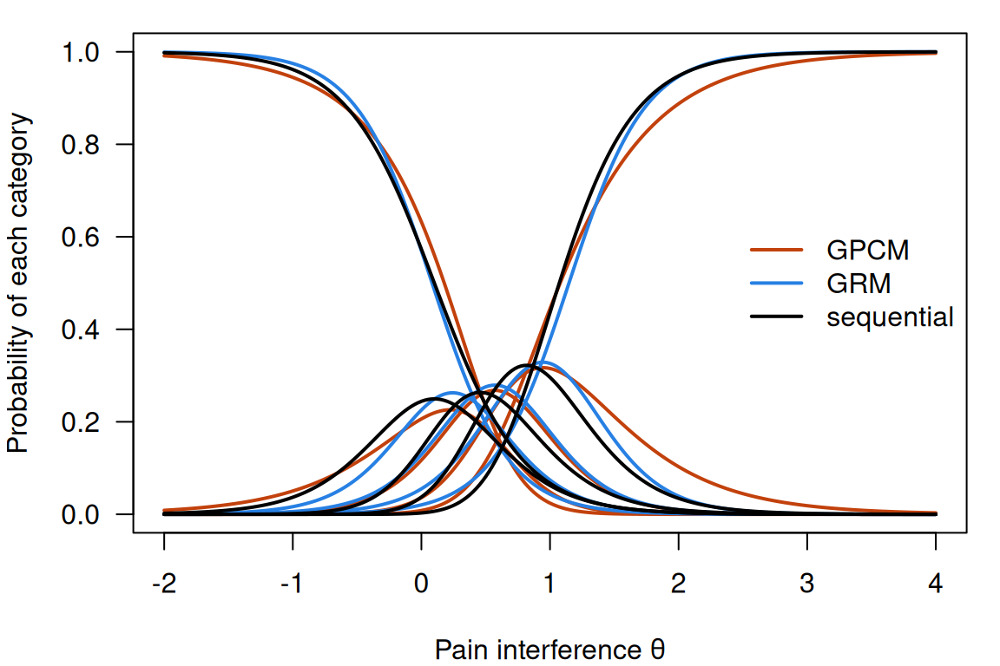
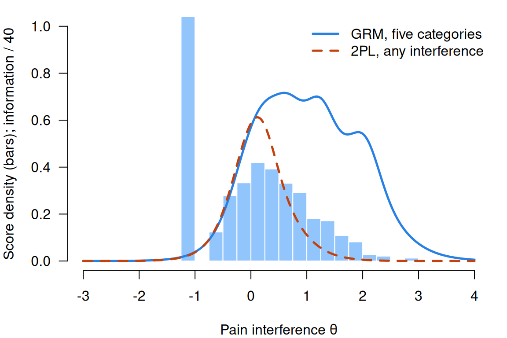

Models for polytomous responses
What this is for
Every model so far has been for dichotomous responses: right or wrong, scored 0 or 1. Much of what respondents give us isn’t like that. A Likert rating runs from strongly disagree to strongly agree, a problem earns partial credit for a correct method with a wrong answer, and a symptom item asks how often, from never to always. We could collapse them to 0 and 1, but Information, precision, and short forms showed that an item measures well near its difficulty, and five ordered categories have four boundaries, so four places to be informative; collapsing keeps one. This lesson builds the standard models for ordered categories, each splitting a response into binary questions answered by a model we already know. It fits four to seven PROMIS pain items and asks what the choice among them changes, and what collapsing would cost. The short answers: not much, and most of the information above the middle of the scale.
Goals
By the end of this lesson you should be able to:
- say what makes a response polytomous, and write the graded response, (generalized) partial credit and sequential models as different ways of splitting a response into binary questions;
- read category response functions and the expected score curve, and say what disordered steps do and don’t mean;
- explain why the sum score is sufficient under the partial credit model, and what takes its place under the other models;
- compute the information in a polytomous item, and say what collapsing its categories costs and where;
- fit and compare these models with
mirt, and judge how much the choice matters for respondents’ scores.
Core ideas
Ordered categories
A response is polytomous when it can fall in more than two categories. The models here need the categories to be mutually exclusive and ordered, each step up meaning more of what is measured: a rating from strongly disagree to strongly agree, a frequency from never to always, or partial credit on a problem (0 for nothing, 1 for a correct setup, 2 for a correct method, 3 for a correct answer). We score the categories \(0, 1, \dots, K\), so an item has \(K\) steps; Ostini and Nering (2006) survey the models. More categories carry more information but take more parameters, and when a person scores the response, the rater becomes a source of error (Many sources of error: generalizability theory).
Three ways to split a response
How can models for 0/1 responses handle four categories? Split the response into binary questions, each with its own curve. Tutz (2022) builds a taxonomy of ordinal models on this view. Three standard splits give three families: cumulative, sequential and adjacent-category (Tutz, 1990, 1997; Mellenbergh, 1995).
- Cumulative splits ask “is \(x\) at least \(k\)?” for each \(k\). The graded response model (GRM; Samejima, 1969) gives each a 2PL with the item’s slope: \[\Pr(x \ge k) = \frac{\exp\big(a(\theta - b_k)\big)}{1 + \exp\big(a(\theta - b_k)\big)}, \qquad \Pr(x = k) = \Pr(x \ge k) - \Pr(x \ge k + 1).\] \(b_k\) is the \(\theta\) at which half of respondents reach category \(k\) or above. The boundaries must be ordered, \(b_1 < b_2 < \dots\), or some probabilities would be negative.
- Adjacent-category splits ask “is \(x\) equal to \(k\) rather than \(k-1\)?”, among responses in one of the two. The generalized partial credit model (GPCM; Muraki, 1992) gives each a 2PL, \(\Pr(x = k \mid x \in \{k-1, k\}) = \text{logit}^{-1}\big(a(\theta - b_k)\big)\), which works out to \[\Pr(x = k) \propto \exp\Big(\sum_{v=1}^{k} a(\theta - b_v)\Big).\] \(b_k\), the step difficulty, is the \(\theta\) at which categories \(k-1\) and \(k\) are equally likely. With \(a = 1\) for every item this is the partial credit model (PCM; Masters, 1982).
- Sequential splits ask “having reached category \(k - 1\), does the respondent go on to \(k\)?” The sequential model (Tutz, 1990) gives each step a 2PL, \(\Pr(x \ge k \mid x \ge k-1) = \text{logit}^{-1}\big(a(\theta - b_k)\big)\), and the respondent stops at the first step failed. It suits a problem solved in stages.
In Thissen and Steinberg’s (1986) terms, the GRM is a difference model and the partial credit family divide-by-total models (the \(\propto\) hides a division by the sum over categories).
Try it: three ways to split a response
Pick a response on a 0–3 item and a set of splits. Each row is one binary question; the cells say how each category answers it. The outlined column is the chosen response.
Same response, three sets of binary data, three models.
Category curves and the expected score
Plotting \(\Pr(x = k)\) against \(\theta\) for each category gives the category response functions (CRFs). The expected score curve, \(E(x \mid \theta) = \sum_k k \Pr(x = k \mid \theta)\), plays the part of the ICC, on the response scale.
Try it: category curves and the expected score
At the defaults each category has its turn as the most likely response; under the GPCM the dashed lines sit where neighbouring curves cross. The same \(b\) values mean different things in each model: the expected score at \(\theta = 0\) is 1.50 under the GRM and GPCM, 1.40 under the sequential model.
Now, under the GPCM, set \(b_1 = 0.5\) and \(b_2 = -0.5\). The steps are disordered, and category 1 is never the most likely response. The GRM can’t do this: it reorders the same values, and category 1 becomes most likely between them. What do disordered steps say? Not that the categories are out of order, since the expected score still rises with \(\theta\), but that a middle category is seldom chosen. What to do about it depends on an assumption. Andrich (2013) takes the categories to be designed so that each should be most likely somewhere, and reads disordered steps as a reason to revisit them. Adams, Wu and Wilson (2012) take the steps as describing category frequencies, which a small middle category explains without any problem in the ordering. The pain data below have three such items.
The partial credit model is a Rasch model
Does sufficiency survive more than two categories? Under the PCM, take two adjacent categories: the log odds of \(k\) against \(k - 1\) is \(\theta - b_k\). Each adjacent pair is a Rasch item.
Try it: adjacent categories on the log-odds scale
The item has \(b = -1.5, 0, 1.5\). Each line is the log odds of one category against the one below it.
Under the PCM the lines are straight and parallel, with slope 1: three Rasch items, crossing zero at their steps. Under the GPCM the slope is \(a\). Under the GRM they bend (with \(a = 1.5\), the first line’s slope is 1.43 at \(\theta = -2\) and 0.07 at \(\theta = 2\)): built on cumulative splits, its adjacent comparisons aren’t logistic.
Because every adjacent comparison in the PCM is a Rasch item, the Rasch algebra goes through: \(\theta\) meets the responses only through the sum of the category scores, \(r = \sum_i x_i\), so \(r\) is sufficient (the Go deeper callout below factors the likelihood), and conditional maximum likelihood works as before. Under the GPCM the weighted score \(\sum_i a_i x_i\) takes \(r\)’s place, as under the 2PL; the GRM has no such statistic. The rating scale model (Andrich, 1978) restricts the PCM further, giving every item the same pattern of steps; problem 2 tries it.
Information, and what collapsing costs
What is the information in a polytomous item? The same curvature argument gives \[I(\theta) = \sum_{k=0}^{K} \frac{\big(\partial \Pr(x = k)/\partial\theta\big)^2}{\Pr(x = k)}\] (Samejima, 1969), which for a 0/1 item is \(a^2P(1-P)\); for the GPCM it is \(a^2\) times the variance of the response given \(\theta\). An item with well-spaced categories is informative across the range its boundaries cover. Under the GRM, collapsing is easy to compare: the item “is \(x \ge k\)?” is a 2PL with slope \(a\) and difficulty \(b_k\), informative around that one boundary.
Try it: what collapsing costs
A GRM item scored 0–3. Compare its information with the item collapsed to 0/1 at one of its boundaries. The shading is where respondents are (a standard normal).
At the defaults the full item gives about 1 from \(\theta = -1\) to 2 (1.04, 1.09, 1.04). Collapsed at \(x \ge 1\) it keeps 1.00 at \(\theta = -1\) and has 0.01 at \(\theta = 2\). Each cut does well near its own boundary only, and no cut beats the full item anywhere; the second Go deeper callout proves that merging categories can’t add information. MacCallum, Zhang, Preacher and Rucker (2002) make the parallel case for continuous variables. Collapsing is a reasonable choice when a category is nearly empty, or when the only decision sits at one boundary.
The choice among these models is a small decision; the choice to keep the categories is a large one.
Simulate
The code below simulates 1,000 respondents answering six 0–3 items from the PCM, fits the PCM and the GRM, and compares both with the truth. Then it collapses every item at \(x \ge 2\), fits a 2PL, and compares test information. The first run takes 20–30 seconds while R and mirt load. mirt fits the PCM with the itemtype "Rasch", which for polytomous items fixes every slope at 1 and estimates the SD of \(\theta\).
With the seed as written, the PCM recovers every step within 0.15, including item 6’s disordered pair (0.5 and −0.5, estimated 0.54 and −0.65), and AIC prefers it to the GRM (14,443 against 14,470). In the plot of item 6, the GRM still gives category 1 a curve of about the right height, with outer curves a little steeper than the truth. Collapsing costs information everywhere, least in the middle (4.09 against 4.79 at \(\theta = 0\)) and most in the tails (0.56 against 1.60 at \(\theta = -2\)). Try np <- 200, steps far apart such as c(-2.5, 0, 2.5), or a collapse at resp >= 1.
Download this code to run it in your own R session.
With real data
Pain interference
Our main example is promis1wave1_pain, from the first wave of testing of the Patient-Reported Outcomes Measurement Information System (PROMIS), which tested item banks for health outcomes on adults from the US general population and clinical groups (Cella et al., 2010; data at https://doi.org/10.7910/DVN/0NGAKG). Its job is to be a polytomous scale on which most respondents report little. We use seven of the 56 candidate items for the pain-interference bank (Amtmann et al., 2010). They ask, for the past seven days, how much pain interfered with enjoying social activities, and how often it caused anxiety, led to avoiding social activities or long trips, made simple tasks hard, or prevented walking a mile or standing for an hour. HealthMeasures, which distributes PROMIS, doesn’t permit republishing the items, so we summarize them. Responses run from 1 (never, or not at all) to 5 (always, or very much): higher means more interference, and no item needs reversing. We recode them 0–4. Download the code to run every chunk yourself.
Code
library(mirt)
set.seed(8)
# Each IRW table has a landing page (itemresponsewarehouse.org/tables/<name>/) with a
# CSV download. This link is pinned to one version of the data.
pain_url <- "https://redivis.com/api/v1/tables/datapages.item_response_warehouse:v59_0.promis1wave1_pain/rows?format=csv"
df <- read.csv(pain_url)
c(respondents = length(unique(df$id)), items = length(unique(df$item)))respondents items
15961 168 Code
wide <- tapply(df$resp, list(df$id, df$item), function(x) x[1])
# The bank was given in blocks, so each respondent answered only some items. Seven
# interference items (PAININ36-PAININ42) were often given together. Responses run
# from 1 (never, or not at all) to 5 (always, or very much): higher = more
# interference, so no item needs reversing. We recode to 0-4.
items <- paste0("PAININ", 36:42)
pain <- as.data.frame(wide[complete.cases(wide[, items]), items]) - 1
nrow(pain) # respondents who answered all seven[1] 1908Code
round(prop.table(table(unlist(pain))), 2) # share of responses in each category
0 1 2 3 4
0.55 0.16 0.14 0.09 0.06 Code
mean(rowSums(pain) == 0) # share who chose 0 on every item[1] 0.3066038The table’s 168 items (interference, behaviour and quality) were given in overlapping blocks, so each of the 15,961 respondents answered some of them; 1,908 answered all seven of ours. (In the behaviour and quality sections, some six-option items share one code between their two lowest options, per the IRW’s item-text notes; the interference items keep their five categories.) Of all responses, 55% are 0, and 31% of respondents chose 0 on every item.
Code
# Four models. mirt's "Rasch" itemtype is the partial credit model when items have
# more than two categories; it fixes every slope at 1 and estimates the SD of theta.
models <- c(PCM = "Rasch", GPCM = "gpcm", GRM = "graded", sequential = "sequential")
fits <- lapply(models, function(m) mirt(pain, 1, itemtype = m, verbose = FALSE))
t(sapply(fits, function(f) c(parameters = extract.mirt(f, "nest"),
logLik = round(extract.mirt(f, "logLik")),
AIC = round(extract.mirt(f, "AIC")),
BIC = round(extract.mirt(f, "BIC"))))) parameters logLik AIC BIC
PCM 29 -12194 24445 24607
GPCM 35 -12045 24160 24355
GRM 35 -11961 23992 24186
sequential 35 -12043 24155 24349Code
# GRM slopes and category boundaries. mirt writes the GRM as P(x >= k) =
# logistic(a * theta + d_k); IRTpars = TRUE converts to our b_k = -d_k / a.
round(coef(fits$GRM, IRTpars = TRUE, simplify = TRUE)$items, 2) a b1 b2 b3 b4
PAININ36 4.41 0.04 0.67 1.21 1.83
PAININ37 2.71 0.13 0.83 1.61 2.50
PAININ38 5.17 0.26 0.68 1.28 2.08
PAININ39 4.40 -0.11 0.46 1.18 2.01
PAININ40 3.37 0.08 0.40 0.74 1.15
PAININ41 2.81 0.73 1.13 1.60 2.42
PAININ42 3.00 0.12 0.47 0.87 1.37AIC (Akaike, 1974) and BIC (Schwarz, 1978) agree: the GRM fits best (AIC 23,992), then the sequential model and the GPCM (24,155 and 24,160), then the PCM (24,445), with six fewer parameters. PROMIS calibrated its banks with the GRM (Cella et al., 2010). The slopes, 2.71 to 5.17, are steep beside the RMET’s 0.19 to 1.13 (From the 1PL to the 4PL), and every boundary lies between \(-0.11\) and 2.50, above the middle of the scale.
Code
# Each respondent's expected a posteriori (EAP) score under each model.
theta <- sapply(fits, function(f) fscores(f, method = "EAP")[, 1])
round(cor(theta), 3) PCM GPCM GRM sequential
PCM 1.000 0.996 0.994 0.995
GPCM 0.996 1.000 0.998 0.999
GRM 0.994 0.998 1.000 0.997
sequential 0.995 0.999 0.997 1.000The scores correlate from 0.994 to 0.999. The category curves for one item show why:
Code
# Category response functions for one item under three models. (The PCM is left out:
# it estimates the SD of theta rather than fixing it at 1, so its theta is on a
# different scale.)
th <- matrix(seq(-2, 4, length.out = 241))
item <- "PAININ40"
cols <- c(GPCM = "#c2410c", GRM = "#2780e3", sequential = "black")
op <- par(mar = c(4, 4, 1, 1))
plot(NA, xlim = range(th), ylim = c(0, 1), xlab = "Pain interference θ",
ylab = "Probability of each category", las = 1)
for (m in names(cols)) {
p <- probtrace(extract.item(fits[[m]], which(items == item)), th)
matlines(th, p, lty = 1, lwd = 2, col = cols[m])
}
legend("right", names(cols), col = cols, lwd = 2, bty = "n")
Code
par(op)For PAININ40 (walking a mile) the GRM, GPCM and sequential curves follow each other closely: different parameters, much the same probabilities.
Code
# GPCM step difficulties: b_k is where categories k - 1 and k are equally likely.
# When b_2 < b_1, category 1 ("rarely", or "a little bit") is never the most
# likely response.
gpcm_b <- coef(fits$GPCM, IRTpars = TRUE, simplify = TRUE)$items
round(gpcm_b, 2) a b1 b2 b3 b4
PAININ36 3.39 0.14 0.69 1.14 1.72
PAININ37 1.84 0.39 0.77 1.56 2.36
PAININ38 3.98 0.38 0.65 1.22 2.04
PAININ39 3.54 -0.01 0.45 1.15 1.95
PAININ40 1.81 0.62 0.31 0.65 0.81
PAININ41 1.65 1.34 0.87 1.29 2.39
PAININ42 1.61 0.73 0.34 0.75 1.05Code
rownames(gpcm_b)[gpcm_b[, "b2"] < gpcm_b[, "b1"]] # items with disordered steps[1] "PAININ40" "PAININ41" "PAININ42"Code
round(sapply(pain, function(x) prop.table(table(factor(x, 0:4)))), 2) PAININ36 PAININ37 PAININ38 PAININ39 PAININ40 PAININ41 PAININ42
0 0.51 0.54 0.59 0.45 0.52 0.73 0.54
1 0.22 0.22 0.15 0.21 0.11 0.10 0.12
2 0.14 0.16 0.15 0.20 0.11 0.08 0.12
3 0.09 0.07 0.09 0.11 0.11 0.07 0.11
4 0.04 0.02 0.02 0.03 0.16 0.02 0.12Code
# Is category 1 ever the most likely response, anywhere on the scale? Under the
# GPCM and under the GRM, which cannot have disordered boundaries:
th_all <- matrix(seq(-4, 5, length.out = 901))
sapply(c("GPCM", "GRM"), function(m) sapply(setNames(seq_along(items), items), function(i)
any(apply(probtrace(extract.item(fits[[m]], i), th_all), 1, which.max) == 2))) GPCM GRM
PAININ36 TRUE TRUE
PAININ37 TRUE TRUE
PAININ38 TRUE TRUE
PAININ39 TRUE TRUE
PAININ40 FALSE FALSE
PAININ41 FALSE FALSE
PAININ42 FALSE FALSEThree items have disordered GPCM steps (\(b_2 < b_1\)): PAININ40, 41 and 42 (walking a mile, avoiding long trips, standing for an hour). For all three, category 1 (rarely) is never the most likely response, under the GPCM and equally under the GRM, whose boundaries can’t be disordered. The proportions say why: 10% to 12% chose category 1 on these items, against 15% to 22% on the other four, while PAININ40 and 42 have the most responses in the top category (16% and 12%). Whether that calls for rewording, or is how people experience these activities, is a question for the item writers; the model raises it without settling it.
Code
# Under the PCM the sum score is sufficient: equal sum scores, equal estimates.
# Under the GRM they can differ. Largest spread of EAP scores within a sum score:
r <- rowSums(pain)
sapply(c("PCM", "GRM"), function(m) round(max(tapply(theta[, m], r, function(v) diff(range(v)))), 2)) PCM GRM
0.00 0.91 Sufficiency, in data: under the PCM, equal sum scores get equal estimates (largest spread 0.00); under the GRM they spread by up to 0.91.
So which model would I fit to these items? The PCM offers a sufficient sum score and asks for equal slopes in return. The GRM and GPCM let slopes vary, which these items need (2.71 to 5.17), and the GRM fits best by AIC and BIC. Yet all four give scores that correlate at 0.994 or above. I’d fit the GRM and report its scores, and not spend long choosing between it and the GPCM. I’d spend the time on the next question: what would we lose by not using the categories at all?
Code
# Test information from the GRM, and from a 2PL fitted to the same items
# dichotomized at "any interference" (x >= 1). Each fit sets the SD of theta in
# these respondents to 1, so the two curves are on comparable scales.
pain01 <- as.data.frame(1 * (pain >= 1))
fit01 <- mirt(pain01, 1, itemtype = "2PL", verbose = FALSE)
at <- matrix(c(-1, 0, 1, 2, 3))
round(data.frame(theta = at[, 1], GRM = testinfo(fits$GRM, at), dichotomized = testinfo(fit01, at)), 1)| theta | GRM | dichotomized |
|---|---|---|
| -1 | 1.5 | 1.5 |
| 0 | 22.8 | 23.5 |
| 1 | 27.4 | 4.4 |
| 2 | 21.7 | 0.2 |
| 3 | 3.0 | 0.0 |
Code
# Where the respondents are: the share of GRM scores below 0, and the score shared
# by everyone who answered 0 to all seven items.
round(c(below_0 = mean(theta[, "GRM"] < 0), floor_score = unique(theta[r == 0, "GRM"])), 2) below_0 floor_score
0.49 -1.10 Code
grid_th <- matrix(seq(-3, 4, length.out = 281))
op <- par(mar = c(4, 4, 1, 1))
hist(theta[, "GRM"], breaks = seq(-3, 4, 0.25), freq = FALSE, col = "#93c5fd", border = "white",
xlim = c(-3, 4), ylim = c(0, 1), main = "", xlab = "Pain interference θ",
ylab = "Score density (bars); information / 40", las = 1)
lines(grid_th, testinfo(fits$GRM, grid_th) / 40, lwd = 2.5, col = "#2780e3")
lines(grid_th, testinfo(fit01, grid_th) / 40, lwd = 2.5, col = "#c2410c", lty = 2)
legend("topright", c("GRM, five categories", "2PL, any interference"), col = c("#2780e3", "#c2410c"),
lwd = 2.5, lty = c(1, 2), bty = "n")
Code
par(op)Collapsed to “any interference”, the seven items give about the same information near \(\theta = 0\) (23.5 against the GRM’s 22.8; each fit sets its own scale, so a small difference means little), where every collapsed item has its one boundary. Above that little is left: 4.4 against 27.4 at \(\theta = 1\), and 0.2 against 21.7 at \(\theta = 2\), among the respondents a pain measure most needs to tell apart. Below the middle neither helps: 49% of respondents have GRM scores below 0, the 31% who reported no interference share one score, \(-1.10\), and information at \(\theta = -1\) is 1.5 under either model. The categories carry the information above the floor; no model recovers what the floor hides.
Attitudes to science
For contrast, science_ltm: seven statements about science and technology put to 392 respondents in Great Britain in the 1992 Euro-Barometer 38.1 (Reif & Melich, 1995; European Commission, 2012), as distributed in the ltm package (Rizopoulos, 2006). Each statement was rated in four categories, from strongly disagree to strongly agree. Its job is to show a short scale, in a small sample, whose responses bunch in the middle rather than at a floor. Four statements favour science (it makes life more comfortable, work more interesting and the future brighter, and its benefits outweigh its harms); three are worded against it (research doesn’t matter for the environment, new technology or industry), all summarized from the ltm documentation.
Code
sci_url <- "https://redivis.com/api/v1/tables/datapages.item_response_warehouse:v59_0.science_ltm/rows?format=csv"
ds <- read.csv(sci_url)
sci <- as.data.frame(tapply(ds$resp, list(ds$id, ds$item), function(x) x[1]))
c(respondents = nrow(sci), complete = sum(complete.cases(sci)))respondents complete
392 392 Code
# Keying. resp_raw carries the labels from the ltm package, which say 4 = strongly
# agree for every item:
table(ds$resp, ds$resp_raw)
agree disagree strongly agree strongly disagree
1 0 0 0 130
2 0 530 0 0
3 1350 0 0 0
4 0 0 734 0Code
# Industry is worded against science (research does not matter to industrial
# development). Read with those labels, 85% of respondents would agree with it:
round(prop.table(table(sci$Industry)), 2)
1 2 3 4
0.03 0.12 0.44 0.41 The resp_raw labels, from the ltm package, say 4 means strongly agree for every item. Read that way, 85% of respondents agreed that research does not matter to industrial development, while majorities agreed with every statement favouring science. The IRW’s item-text check compared each item’s distribution with the 1992 codebook’s figures for Great Britain: for the three statements worded against science, 4 is strongly disagree. The data arrive already reverse-keyed, every item running toward a favourable view of science; only the labels weren’t updated. Could the correlations have told us?
Code
# Rank correlations between the four items worded for science and the three worded
# against it, then a two-factor analysis of the polychoric correlations.
pos <- c("Comfort", "Work", "Future", "Benefit")
neg <- c("Environment", "Technology", "Industry")
round(range(cor(sci, method = "spearman")[pos, neg]), 2)[1] -0.08 0.15Code
efa <- psych::fa(sci, nfactors = 2, cor = "poly", rotate = "oblimin")
print(efa$loadings, cutoff = 0.3)
Loadings:
MR1 MR2
Benefit 0.548
Comfort 0.523
Environment 0.657
Future 0.754
Industry 0.633
Technology 0.697
Work 0.519
MR1 MR2
SS loadings 1.437 1.367
Proportion Var 0.205 0.195
Cumulative Var 0.205 0.401Code
round(efa$Phi[1, 2], 2) # the correlation between the factors[1] 0.03No. Rank correlations between the two sets run from \(-0.08\) to 0.15, near zero whichever way the three are keyed, and a two-factor analysis of the polychoric correlations puts the sets on factors that correlate 0.03.
One \(\theta\) for all seven would describe two things at once; several dimensions are the subject of Dimensionality and multidimensional IRT. We fit the four statements favouring science.
Code
sci4 <- sci[, pos] - 1 # the four items worded for science, 0-3
round(sapply(sci4, function(x) prop.table(table(factor(x, 0:3)))), 2) Comfort Work Future Benefit
0 0.01 0.08 0.04 0.05
1 0.08 0.25 0.18 0.26
2 0.68 0.53 0.54 0.49
3 0.23 0.14 0.24 0.20Code
fits4 <- lapply(models, function(m) mirt(sci4, 1, itemtype = m, verbose = FALSE))
t(sapply(fits4, function(f) c(parameters = extract.mirt(f, "nest"),
AIC = round(extract.mirt(f, "AIC")),
BIC = round(extract.mirt(f, "BIC"))))) parameters AIC BIC
PCM 13 3265 3316
GPCM 16 3257 3321
GRM 16 3250 3313
sequential 16 3252 3315Code
round(coef(fits4$GRM, IRTpars = TRUE, simplify = TRUE)$items, 2) a b1 b2 b3
Comfort 1.04 -4.67 -2.53 1.41
Work 1.23 -2.39 -0.74 1.85
Future 2.29 -2.28 -0.97 0.86
Benefit 1.09 -3.06 -0.91 1.54Code
round(cor(sapply(fits4, function(f) fscores(f, method = "EAP")[, 1])), 2) PCM GPCM GRM sequential
PCM 1.00 0.96 0.97 0.97
GPCM 0.96 1.00 1.00 0.99
GRM 0.97 1.00 1.00 1.00
sequential 0.97 0.99 1.00 1.00From 49% (Benefit) to 68% (Comfort) of responses are in the third category, agree to some extent. The four models fit about equally well: AIC runs from 3,250 (GRM) to 3,265 (PCM), BIC from 3,313 to 3,321, the PCM second by BIC with three fewer parameters. The GRM slopes (1.04 to 2.29) are far flatter than the pain items’. The scores correlate at 0.96 or above, 0.99 or above among the models with free slopes. A different scale and sample, the same result: models with similar numbers of parameters describe the data about equally well.
Problems
- The PCM’s adjacent categories. Starting from \(\Pr(x = k) \propto \exp\big(\sum_{v \le k}(\theta - b_v)\big)\), show that \(\Pr(x = k \mid x \in \{k - 1, k\})\) is a Rasch curve with difficulty \(b_k\). Then show that the sum score is sufficient for \(\theta\) under the PCM, and find the statistic that is sufficient under the GPCM.
- The rating scale model. Fit the rating scale model (
itemtype = "rsm") and the PCM to the fourscience_ltmitems worded in favour of science. What does the rating scale model assume about the items’ steps, and how many parameters does that save here? Compare AIC and BIC, and look at the PCM’s steps: do the data support the assumption? (PS8#1) - Which scores? For the pain items, compare each respondent’s GRM and GPCM scores. How large is the largest difference, and for whom? Would the choice of model change anyone’s score by more than its standard error? Would you report scores from the GRM or the GPCM, and why?
- How many categories? You are writing a new frequency item for a symptom survey. Would you offer three, five or seven categories? Say what you would check in pilot data before deciding (empty categories, disordered steps, information where your respondents are), and how you would check each in
mirt. - A PCM item the GRM can’t describe. Using the simulation, find step difficulties for a PCM item that the GRM describes poorly. Measure “poorly” by the largest difference between the true and the GRM’s fitted category curves, and by AIC. What kind of steps do it, and would you expect to meet them in real data? (PS8#2)
- Challenge (open): the floor. Almost a third of the pain respondents chose 0 on every item, and share one score. Is a floor like that a problem for the model, for the population, or for neither? What would you change (the items, the sample, the model) to learn more about respondents at the floor, and what would each change cost? I don’t have a general answer.
Going further
- Ostini, R., & Nering, M. L. (2006). Polytomous item response theory models. Sage. https://doi.org/10.4135/9781412985413. A short book on the whole family, with the models’ assumptions side by side.
- Samejima, F. (1969). Estimation of latent ability using a response pattern of graded scores. Psychometrika, 34(S1), 1–97. https://doi.org/10.1007/BF03372160. The graded response model, and information for graded items.
- Masters, G. N. (1982). A Rasch model for partial credit scoring. Psychometrika, 47(2), 149–174. https://doi.org/10.1007/BF02296272. The partial credit model.
- Muraki, E. (1992). A generalized partial credit model: Application of an EM algorithm. Applied Psychological Measurement, 16(2), 159–176. https://doi.org/10.1177/014662169201600206. The partial credit model with slopes.
- Andrich, D. (1978). A rating formulation for ordered response categories. Psychometrika, 43(4), 561–573. https://doi.org/10.1007/BF02293814. The rating scale model (problem 2).
- Tutz, G. (1990). Sequential item response models with an ordered response. British Journal of Mathematical and Statistical Psychology, 43(1), 39–55. https://doi.org/10.1111/j.2044-8317.1990.tb00925.x. The sequential model, which IRTree models generalizes.
- Tutz, G. (1997). Sequential models for ordered responses. In W. J. van der Linden & R. K. Hambleton (Eds.), Handbook of modern item response theory (pp. 139–152). Springer. https://doi.org/10.1007/978-1-4757-2691-6_8. The sequential model as an item response model.
- Tutz, G. (2020). On the structure of ordered latent trait models. Journal of Mathematical Psychology, 96, 102346. https://doi.org/10.1016/j.jmp.2020.102346. How ordered latent trait models are built, and how they relate.
- Tutz, G. (2022). Ordinal regression: A review and a taxonomy of models. WIREs Computational Statistics, 14(2), e1545. https://doi.org/10.1002/wics.1545. Ordinal models as compositions of binary models: the taxonomy behind this lesson’s three splits.
- Thissen, D., & Steinberg, L. (1986). A taxonomy of item response models. Psychometrika, 51(4), 567–577. https://doi.org/10.1007/BF02295596. Difference and divide-by-total models.
- Mellenbergh, G. J. (1995). Conceptual notes on models for discrete polytomous item responses. Applied Psychological Measurement, 19(1), 91–100. https://doi.org/10.1177/014662169501900110. Cumulative, adjacent-category and sequential splits.
- van der Ark, L. A. (2001). Relationships and properties of polytomous item response theory models. Applied Psychological Measurement, 25(3), 273–282. https://doi.org/10.1177/01466210122032073. What each family guarantees about the sum score.
- Andrich, D. (2013). An expanded derivation of the threshold structure of the polytomous Rasch model that dispels any “threshold disorder controversy”. Educational and Psychological Measurement, 73(1), 78–124. https://doi.org/10.1177/0013164412450877. Disordered steps as evidence about the categories.
- Adams, R. J., Wu, M. L., & Wilson, M. (2012). The Rasch rating model and the disordered threshold controversy. Educational and Psychological Measurement, 72(4), 547–573. https://doi.org/10.1177/0013164411432166. Disordered steps as a consequence of small categories.
- MacCallum, R. C., Zhang, S., Preacher, K. J., & Rucker, D. D. (2002). On the practice of dichotomization of quantitative variables. Psychological Methods, 7(1), 19–40. https://doi.org/10.1037/1082-989X.7.1.19. What dichotomizing costs, for continuous variables.
- Amtmann, D., Cook, K. F., Jensen, M. P., Chen, W.-H., Choi, S., Revicki, D., Cella, D., Rothrock, N., Keefe, F., Callahan, L., & Lai, J.-S. (2010). Development of a PROMIS item bank to measure pain interference. Pain, 150(1), 173–182. https://doi.org/10.1016/j.pain.2010.04.025. How the pain-interference bank went from 56 candidate items to 41.
- Cella, D., Riley, W., Stone, A., Rothrock, N., Reeve, B., Yount, S., et al. (2010). The Patient-Reported Outcomes Measurement Information System (PROMIS) developed and tested its first wave of adult self-reported health outcome item banks: 2005–2008. Journal of Clinical Epidemiology, 63(11), 1179–1194. https://doi.org/10.1016/j.jclinepi.2010.04.011. The source of the pain data, and PROMIS’s calibration with the GRM.
- Reif, K., & Melich, A. (1995). Euro-barometer 38.1: Consumer protection and perceptions of science and technology, November 1992. ICPSR. https://doi.org/10.3886/ICPSR06045. The source of the attitudes-to-science data.
- Rizopoulos, D. (2006). ltm: An R package for latent variable modeling and item response theory analyses. Journal of Statistical Software, 17(5). https://doi.org/10.18637/jss.v017.i05. The package that distributes the science data.
- Chalmers, R. P. (2012). mirt: A multidimensional item response theory package for the R environment. Journal of Statistical Software, 48(6). https://doi.org/10.18637/jss.v048.i06. The package used throughout, with every model here as an
itemtype. - Akaike, H. (1974). A new look at the statistical model identification. IEEE Transactions on Automatic Control, 19(6), 716–723. https://doi.org/10.1109/TAC.1974.1100705. The AIC.
Data sources
Data from the Item Response Warehouse (each table name links to its IRW page); references from IRW biblio.
promis1wave1_pain: Cella, D., Riley, W., Stone, A., Rothrock, N., Reeve, B., Yount, S., … & Hays, R. (2010). Initial adult health item banks and first wave testing of the patient-reported outcomes measurement information system (PROMIS™) network: 2005–2008. Journal of clinical epidemiology, 63(11), 1179. Cella, David, 2015, “PROMIS 1 Wave 1”, https://doi.org/10.7910/DVN/0NGAKG, Harvard Dataverse, V3, UNF:6:sXYqKDzGWfX7QuTXNGpjGQ== [fileUNF]. Licence: CC0 1.0.science_ltm: Karlheinz, R. and Melich, A. (1992) Euro-Barometer 38.1: Consumer Protection and Perceptions of Science and Technology. INRA (Europe), Brussels. [computer file]. https://cran.r-project.org/web/packages/ltm/index.html. Licence: GPL-3.0.
For instructors
- Source: EDUC 252 classes 8 (slides c8, 3–30) and 9 (slides c9, 1–11), problem set 8 (#1–#3), and the code in
ben-domingue/252:c8/basic_polytomous_analysis.R,c9/polyexample.R,ps8/ratingscale.R,ps8/polytomous_estimates.R,ps8/polydif.R. - Timing: the core ideas and widgets take about 60 minutes; the two analyses work as a 30-minute lab. The real-data code takes under a minute in local R.
- Changed from 252: PS8#1’s
ffm_CSNhas no tokenless CSV, so the rating scale model moves toscience_ltm(problem 2). The pain analysis uses seven interference items that 1,908 respondents all answered, rather than the ten most-answered items across the interference, behaviour and quality sections, so that one \(\theta\) is plausible and every item has its five categories as asked.science_ltm’s seven items form two nearly uncorrelated clusters, so the lesson fits the four worded in favour of science. - Held back: splitting a response into a tree (IRTree models); nominal responses (Nominal response and multiple-choice models); ideal-point responses (Unfolding models); polytomous items in banks and adaptive tests (Item banks and adaptive testing); several dimensions (Dimensionality and multidimensional IRT). Ordinal DIF (PS8#3) is a problem on the CES-D in Differential item functioning, which doesn’t depend on this lesson. Item-level fit statistics for polytomous models aren’t covered.
- Item text: PROMIS items are summarized, not quoted (HealthMeasures’ terms). The Euro-Barometer statements are summarized from the
ltmdocumentation; the questionnaire’s licence isn’t confirmed. - Solutions: held back in
solutions/polytomous.qmd(not published).